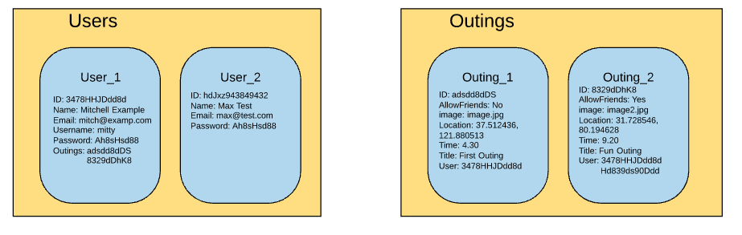

Les Adventures de Marie-Thérèse
Les Adventures de Marie-Thérèse is a French-to-English language learning adventure game. The game's protagonist Marie-Thérèse lives in Haiti, where she takes you on a journey through her village, all the while interacting with family, friends, neighbors, and learning English in a fun way. It is suitable for kids in elementary & middle schools. The game goes through to the fundamentals of the English language such as - nouns, pronouns, adjectives as well as grammar basics such as - sentence parts and sentence structures.
The game was developed as a project under TFI fellowship, in collaboration with Mercy Beyond Borders & Hope for Haiti. It was implemented as an offline Linux application for Endless OS to keep students engaged while learning a new language. My team of content creators, linguist, and another software engineer were tasked with creating an 11 chapter, fully functional game to cover all the major grammatical aspects of English. It is currently being used by students in Haiti for grades 2 through 7.
Authentication
To login or signup, AMLoginSignup was used as a template to create a sleek and simple introduction to the users. The page animates between the login and signup sections or the user can simply click the Facebook button to be authenticated through the Facebook SDK. Users and their information are stored in documents in the "Users" collection which is discussed in more detail in the database section.
Twitter and Google+ login services will be added soon, along with keychain access to start the app at the home page without the need to log in each time the app is opened. This not only will benefit the users, but will mostly help for debugging as it can be quite annoying logging in each time I want to test an aspect of the actual content in the app.
List of Outings
Upon successful login, the user will be brought to the home screen which is a table view of all past and planned "Outings". Each cell contains an image of the representing the Outings (either uploaded by the user or a default image), the user who started/planned it, the date, and a title description. If the Outing is planned, the user has the option to join it via a plus icon. The rounded edges and colors are a modified version of this Stack Overflow post.
When a specific outing is clicked, a new View Controller is pushed to the Navigation stack with more details about the Outing. An interactive map is shown to see the path taken along with the stops during the trip. Other details such as the duration of the Outing, the steps count, and the members who joined it are also displayed.
Map
The map features are done with MapKit and with the tracking help of ArcKit. This open source framework does most of the heavy lifting the trail aspect of the map by using Core Location and Core Motion recordings to detect when stationary or moving. It uses a Kalman filter to reduce the noise from the raw tracking data while also letting the user display the exact path that was captured. There is even a machine learning aspect to detect the type of motion that is in progress (whether it be walking, running, driving, etc.).
To start an Outing immediately, the user can click the location icon in the top right of the title bar when they are currently inside of the "Map" tab of the Tab Bar controller. The app will start using ArcKit to immediately begin recording the motion and path of the user. By default, the map auto scales to fit the entire route progress into the view. This can be modified on the settings tab by switching off "Auto Zoom". The map tab will continue to track the user's motion until turned off via the pin icon. Because of this, Outings requires the user to allow the app to always track their location and motion data. Luckily ArcKit does a pretty good job of not burning too much battery.
When not inside of the Map tab, the user can plan a new outing by clicking the pin icon. This page prompts the user for an Outing title, date & time, location of the outing (or current location), a custom image, and a switch to allow others to join. When the plus icon is pressed, the trip will show up on all of their friends home feed, allowing them to join. The static table view is designed using the open source iOS form builder, Eureka.
Settings
Likewise, the settings page also uses a static table view built from Eureka. The current controls for modifying how the map appears are showing the stops, showing the raw path, auto zoom, and logging out. ArcKit also allows other settings like classifying the activity type and showing the smoothed samples, which are not yet implemented yet. Other settings such as links to user permissions also need to be added in case they did not allow them when prompted at the start, as the app will not function at all without them.
Profile & Social Integration
The current profile page consists of buttons to change the profile picture, view friends, and view posts. As of now, only the change image is functional, which is a major issue since users need to be able to show and add friends to plan their Outings or show off old ones. Basically, only the UI is set up for this section so far. Users will also need a button to search for friends or to send them an invite link.
Database

 As mentioned earlier, the backend for this app uses Googles new Cloud Firestore. The provides a new alternative to the Firebase Database, which essentially just stored all of the data in a large JSON file. Firestore queries data via documents and collections as shown in the image to the right. It retains some of the best features of the Firebase platform like authentication and real-time data synchronization but is able to make incredibly fast queries regardless of the data set size. More information on Firestore can be found in this blog post and in the documentation at the Cloud Firestore console. The one downside to using this is that it is new and still in beta so there are very few tutorials on using it in iOS apps yet. Luckily, Google's documentation is relatively straightforward and not too hard to dive right into.
As mentioned earlier, the backend for this app uses Googles new Cloud Firestore. The provides a new alternative to the Firebase Database, which essentially just stored all of the data in a large JSON file. Firestore queries data via documents and collections as shown in the image to the right. It retains some of the best features of the Firebase platform like authentication and real-time data synchronization but is able to make incredibly fast queries regardless of the data set size. More information on Firestore can be found in this blog post and in the documentation at the Cloud Firestore console. The one downside to using this is that it is new and still in beta so there are very few tutorials on using it in iOS apps yet. Luckily, Google's documentation is relatively straightforward and not too hard to dive right into.
Outings has a simple implementation of Firestore, using only two collections; Users and Collections. The documents in the User collection contain all information directly pertaining to a specific user. This includes: user ID (auto-generated through Firebase), username, full name, username, password, and Outings, which points to all Outings documents that user is a part of. Likewise, the documents in the Outings collection contain all information pertaining to a specific Outing. This includes: Outing ID, Allowing Friends, image, start location, map, time, title, and the user that started or planned it. As we can see it is a pretty barebones implementation that hardly even utilizes the new structure, but it is still fun to get started with Firestore as I think most Firebase apps will migrate to it eventually.
- 
Lessons & Future Work
This is the largest iOS app I have worked on to date and the biggest issue I faced was dealing with merge conflicts; more specifically, storyboard conflicts. I've read that for pretty much all larger apps at big companies, the UI is done programmatically and I can definitely see why. Storyboards have been amazing for quickly prototyping apps, but it just seems too difficult to merge, even when split into separate boards. Even when those conflicts were resolved, we ran into random Xcode issues when compiling the app. Some of these would take hours to fix, usually just finally working when seemingly nothing had changed. There are also no Unit/UI or any automated tests currently used (yikes). This is a huge aspect of building any application and will need to be added soon.
Beyond those issues, the app is still incomplete and needs to be finished before adding new features and eventually submitting to the app store. The first step is going to be saving the map from an Outing. This is the basic core functionality so is the top priority. The next steps will be to finish the profile/social integration section so users can actually connect with one another.
After finishing and polishing up the core functionalities, some of the new features and tasks I have for this project are listed below:
- Include altitude information (max/min, inclines/declines)
- Login and friend list integration expanded to Twitter & Google+
- Update settings for classifying motion type & update user permissions
- Add a timer to the map
- Push notifications for upcoming Outings the user has joined, friend requests, etc.
- Miscellaneous iOS optimizations (force touch icon, widget, message invites, etc.)
- Submit to the App Store
Source Code
The source code can be found on GitHub and feel free to contact me for any questions or suggestions.